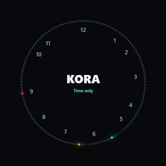
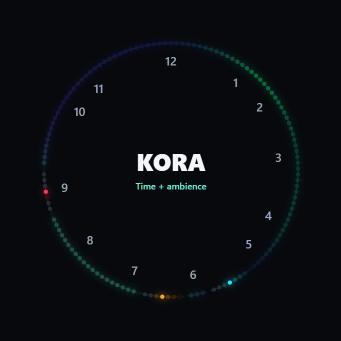
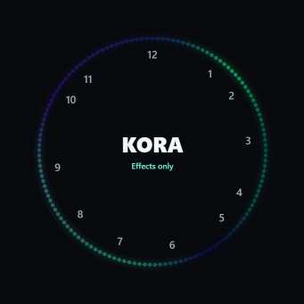
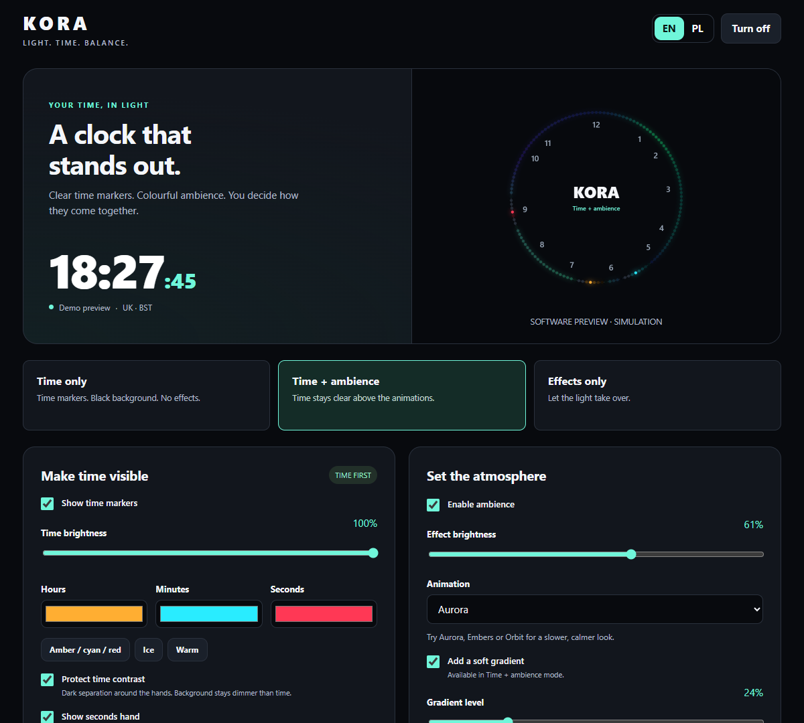
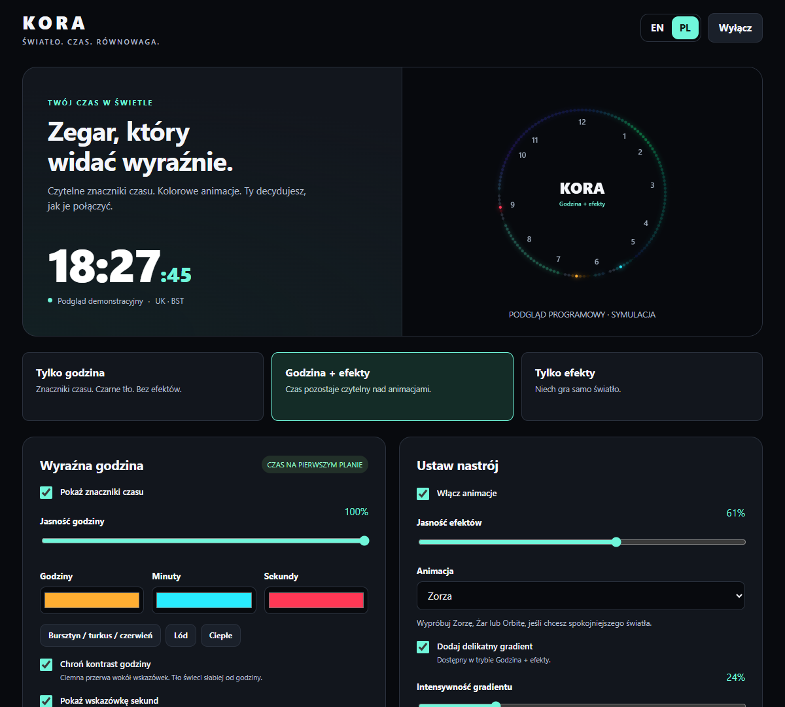
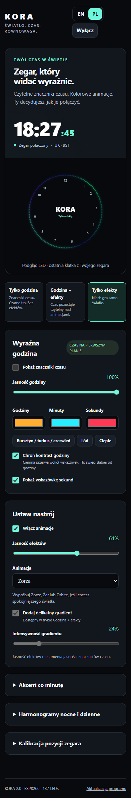
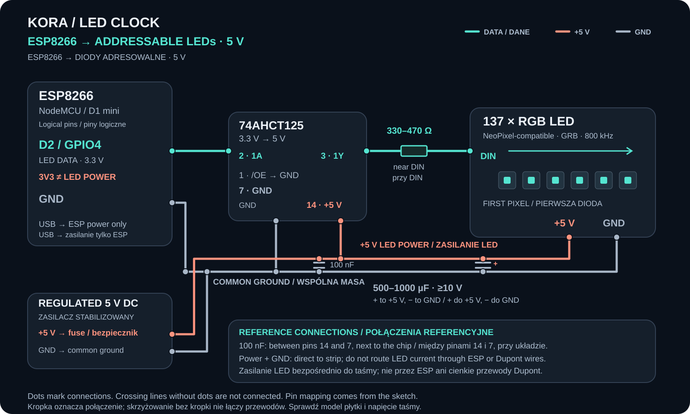

Readable time
Separate animation history, shorter hand trails and contrast protection prevent effects from swallowing the time.
An analogue LED clock with a clear priority: the time stays readable, even when the light is moving. Choose pure time, time with ambience, or effects on their own.


Time markers and short trails on a black background. No gradient or minute comet.

Independent brightness and dark separation around the hands keep the time in front of every animation.

A dedicated lighting mode without a time overlay. Let the selected animation fill the strip.
Hour, minute and second colours are separate. The OLED and browser show the digital time; the LED strip shows the calibrated positions of the hands. These images illustrate the software output, not a photograph of the finished clock.
The new panel is built into the ESP8266 firmware. It works in a browser on your local network and includes a live LED frame preview, colour presets, schedules and calibration. No external fonts or CDN are required.



Separate animation history, shorter hand trails and contrast protection prevent effects from swallowing the time.
Aurora, Embers and Orbit join 26 existing effect selections. The minute comet stays underneath the time markers.
Weekday and weekend schedules, independent dimming, saved calibration, OLED status, SinricPro power control and OTA updates.
| Part | Specification / purpose | Existing catalogue link |
|---|---|---|
| ESP8266 | Controller; build verified for NodeMCU 1.0 (ESP-12E). Exact board model is not confirmed by the sketch. | — |
| 137 × addressable LED | GRB, 800 kHz, NeoPixel-compatible. Use an addressable strip, not a basic four-wire RGB strip. | — |
| SSD1306 OLED | 128×64, I²C, address 0x3C. | View part ↗ |
| Dupont / wiring | Suitable interconnects for signals; power wiring must carry the actual LED current. | View part ↗ |
| LED power supply | A regulated supply matched to the actual strip. Exact supply model is not given in the code. | — |
| Reference additions | 3.3 V → 5 V level shifter, 330–470 Ω data resistor and supply capacitor for a compatible 5 V strip. | — |
The existing RGB-strip catalogue entry does not identify an addressable model, so it is not offered here as an exact compatible purchase. Links are included only where an existing entry matches. Some links are affiliate links.
Browse the parts catalogue →
| ESP8266 | Connect to |
|---|---|
| D2 / GPIO4 | LED DIN through the appropriate data interface. |
| D5 / GPIO14 | OLED SDA |
| D6 / GPIO12 | OLED SCL |
| 3V3 + GND | Compatible SSD1306 module supply; I²C signals remain 3.3 V. |
| Common GND | Join the controller, OLED, level shifter and LED supply ground. |
D2/D5/D6 aliases are for NodeMCU and D1 mini board definitions. The data connections are taken from the sketch; the power components are a reference recommendation. Power 137 LEDs from a suitably sized supply, rather than the board’s 3V3 output. For a 5 V strip, use a suitable level shifter, data resistor and 500–1000 µF supply capacitor (rated for the supply).
Reference: Adafruit NeoPixel wiring recommendations
Download wiring diagram (.svg)In Arduino IDE Preferences, add the ESP8266 package URL below to Additional Boards Manager URLs. In Boards Manager install esp8266 by ESP8266 Community. The verified build used version 3.1.2.
https://arduino.esp8266.com/stable/package_esp8266com_index.json
Install SinricPro 5.1.0, WebSockets 2.7.2, ArduinoJson 7.4.3, Adafruit NeoPixel 1.15.5, Adafruit GFX 1.12.6, Adafruit SSD1306 2.5.17 and Adafruit BusIO 1.17.4. NTPClient is not required.
Extract the ZIP and open KORA_Clock_2_0.ino. Keep every header in the same folder. Enter your Wi-Fi credentials, SinricPro App Key/App Secret/Switch Device ID and your own OTA password in Config.h. Create a Switch in the SinricPro portal and use your own account credentials.
For the tested target choose NodeMCU 1.0 (ESP-12E Module). Match Flash Size to your actual board, use the correct USB port and start with upload speed 115200. Keep Erase Flash set to Only Sketch to retain saved calibration. Verify, then Upload.
On the same Wi-Fi network open http://zegar.local/ or the IP address shown on the OLED. Wait for the first time synchronisation. Select Time only to check the markers, then try Time + ambience with contrast protection and Aurora. Use Amber / cyan / red for clearly separated hand colours.
This is ESP8266 firmware, not the ESP32-C3 weather-station sketch. The time offset follows UK GMT/BST. Weekday and weekend schedules are separate; each event runs at its configured minute. Disable unwanted schedules for continuous display. Existing calibrated positions are retained, and new options use a separate EEPROM block.
Arduino sketch, renderer, EN/PL web panel, asynchronous time client, setup guide and reference wiring. Config.h contains placeholders; no personal credentials are included.
Download KORA 2.0 ZIPThe bilingual guide covers libraries, pins, calibration, schedules and updating the web panel source.
Download EN/PL guideDownload the diagramValidation: successful ESP8266 NodeMCU build and software tests of all 29 animations, clock contrast, mode selection, brightness independence, calibration, saved settings and UK daylight-saving boundaries. The EN/PL interface was checked on desktop and mobile. A physical test of this revised firmware is still to be documented in the video.
I will add the video here after publication, showing the real clock, lighting effects and browser controls.